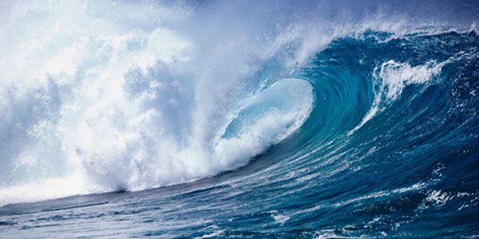

Течения.

В старых морских повестях часто рассказывается о записке, найденной в бутылке, выловленной из океана. Такую бутылку, брошенную посередине океана, с вложенной в неё запиской могло прибить течением к берегу, и тогда она сообщала о бедствии, постигшем мореплавателей. В старые времена это был почти единственный способ для осуществления связи потерпевших кораблекрушение с каким-либо кораблём или далёким берегом.
Течения действительно совершают далёкие странствования: они пересекают океаны и моря (см. рис 2). К берегам Англии и Норвегии течения заносят тропические деревья. Громадные сибирские кедры, унесённые половодьем, оказываются на Новой Земле, на Шпицбергене и даже в Гренландии. Буйки от немецких мин, поставленные в 1914 году в европейских водах, находили на берегах Новой Земли.
Для Европы особое значение имеет течение, называемое Гольфстримом. Это течение идёт от берегов Америки — из Мексиканского залива — и с большою скоростью направляется к берегам Европы. «Гольфстрим» означает «течение из залива» (по-английски «гальф» означает морской залив, а «стрим» — течение).
Ещё более значительные течения имеются в Тихом океане.
Что вызывает эти огромные перемещения вод? Главных причин две: ветер и разность плотностей воды в разных районах океана.
Вот как, например, образуется течение Гольфстрим. В экваториальной области дуют постоянные ветры с востока на запад. В Атлантическом океане они гонят воду в Мексиканский залив. Вода, постепенно прибывая в этом заливе, ищет выхода и вытекает мощным течением через Флоридский пролив в северную половину Атлантического океана. 90 миллиардов тонн воды в час выливается Гольфстримом из Мексиканского залива! Поток имеет глубину в 800 метров. Скорость течения во Флоридском проливе достигает 8 километров в час.
Благодаря вращению Земли создаются особые силы, отклоняющие поверхностные течения в северном полушарии — вправо и в южном полушарии — влево. Благодаря этому Гольфстрим и порождённое им Северо-Атлантическое течение, постепенно поворачиваясь, пересекают северную часть Атлантического океана и устремляются, прижимаясь к берегам Европы, на северо-восток.
Северо-Атлантическое течение, идущее к берегам Европы, отепляет и увлажняет климат западной и северозападной Европы. Вот почему на юге Норвегии растёт виноград, а Мурманский порт не замерзает.
Подобные течения существуют и в других океанах. Так, например, в Тихом океане мощное Экваториальное течение вызывает идущее на север и затем на северо-восток течение Куро-Сиво; оно имеет огромное значение для климата и рыболовства советского Дальнего Востока.
Плотность морской воды зависит от температуры и солёности воды. Холодные воды тяжелее тёплых. Поэтому охлаждённые на севере воды опускаются в глубину. Но ведь вода, благодаря своему жидкому состоянию, будет стремиться выравняться, сохранить везде одинаковый уровень. Следовательно, от экватора к полюсам должна начать поступать поверху более тёплая и лёгкая вода. На севере она будет охлаждаться и опускаться. Таким образом, благодаря разности в плотности воды, создадутся два основных течения: одно — тёплое (лёгкие воды) — от экватора к полюсам, в поверхностных слоях океана, другое — холодное (тяжёлые воды) — от полюсов к экватору, в глубине. Вблизи экватора холодные воды начнут подниматься вверх, так как тёплые воды уходят из экваториальной области на север.
Обычно образование любого течения зависит как от ветра, так и от различия в плотности воды.
Расположение материков, островов и различная глубина морей и океанов приводят к тому, что различные части течений обособляются. Часто появляются местные течения, которые приобретают самостоятельный характер.
Значение течений в климате, а следовательно, и в жизни многих стран огромно. Если бы, например, атлантические волы, входящие в Баренцево море, отдали бы в воздух тепла больше только на 1 градус, чем они дают теперь, то климат Мурманска был бы на 10 градусов теплее!
Зная изменения температуры морских течений, можно предсказывать погоду, количество льдов и другие климатические явления.